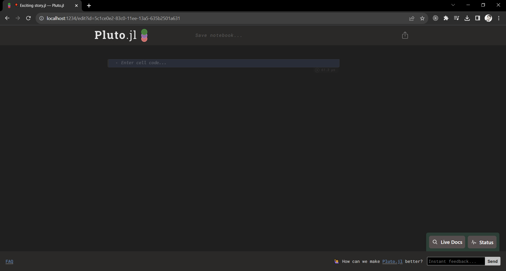

You can use KomaMRI with popular programming environments such as Pluto and Jupyter notebooks. The following sections show how to set up these notebooks and test KomaMRI with them.
First, install the Pluto module in your Julia environment. Remember to press the ] button to open the Package Manager Session:
julia>
@(1.9) pkg> add Pluto
Afterward, return to the Julia Session by pressing the backspace button, and then execute the Pluto.run() function:
julia> using Pluto
julia> Pluto.run()
This should automatically open the Pluto dashboard in your default web browser:

Next, create a new notebook by clicking on + Create a new notebook:
Write and run the following code, which is identical to the Free Induction Decay example. Pluto automatically installs the required modules if they are not present on your system. Additionally, note that we do not directly use KomaMRI since we won't be utilizing the KomaUI function. Instead, we rely on the KomaMRICore and KomaMRIPlots dependencies. To display plots in Pluto, ensure that you import the PlutoPlotly package, as KomaMRIPlots requires its backend to display figures in Pluto: